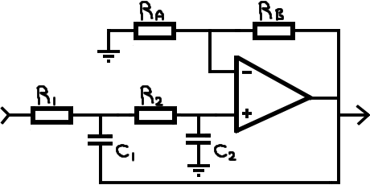

Filter calculator (Resistors in kΩ, Capacitors in nF, Frequencies in kHz):
| R1 | R2 | C1 | C2 | Rf |
| K = 1+Rb/Ra = | ||||
| F0 | Q | |||
| Get closest serie | ||||
|  | |
| H(p)= | |
Select a function to get the corresponding resonance (not complete, go here (p.46), for more info):
| Function | Order | Ripple |
When designing a filter, you have two mains things to consider: what function do you need, and how you will implement it. Here are the most commons choices:
| Functions | |||
|---|---|---|---|
| Family | Name | Description | Use |
| Polynomial | 1st order | The basic RC filter | Useful for debouncing and smoothing signals |
| 2nd order | The most common filter | Generic filter, see variants below | |
| Butterworth | Quite selective filter, really good magnitude response (sharp and straight) | Low distortion and selective application, but take care of the phase! | |
| Bessel | Not really selective, smooth phase transition | Really good in audio path | |
| Chebychev | Really selective, but ripple in the pass band (see Chebychev type 2 for a flat response) | Not good for audio, but can be used for signal processing. | |
| Elliptic | Cauer | More selective than Chebychev, but the attenuation is limited | ? |
| Topologies | ||
|---|---|---|
| Name | Description | Use |
| RC | The basic RC filter | Useful for debouncing and smoothing signals |
| LC | Simple 2nd order filter, with infinite resonance (but you need an inductor) | Mostly use in power application, as it has no loss (in theory) |
| Sallen-Key | The most common 2nd order topology | Can implement any 2nd order function, and it's quite controllable: the resonance depend of the gain, and the cutoff frequency of two resistors |
| Rausch (MFB) | No real benefits compared to the Sallen-Key topology, less component, but harder to tune | Can implement any 2nd order function |
| Universal cell | Really easy to use topology, but need a bit more components | Quickly design filter, funny to fiddle with, useful when you need different types of I/O |